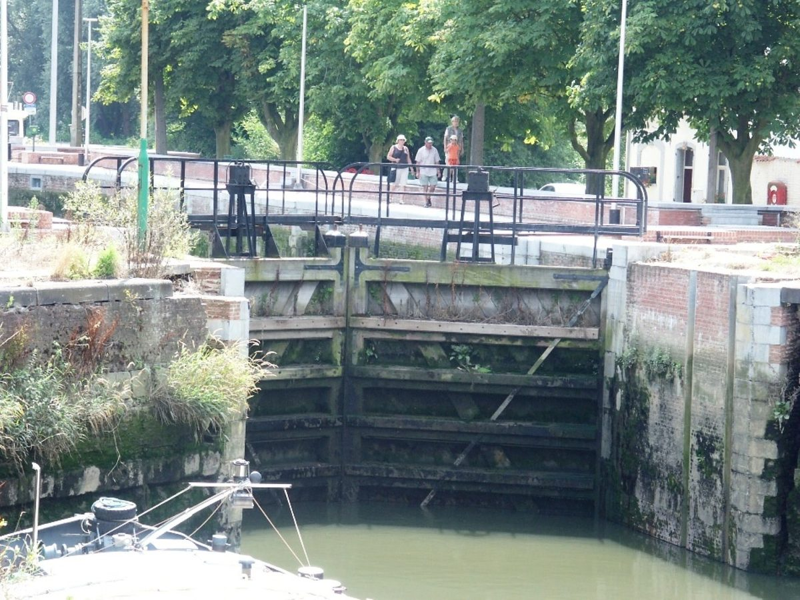

벨기에 자연보호단체 나투르퓐트, 에코파워의 메헬렌-노르트 풍차에 '다섯 조건' 이의…"조건 없으면 허가 말아야"

가을 이동철 박쥐 보호 야간 자동 정지·가동 뒤 최소 2년 독립 조사 등 요구…자연 부분만 '조건부 찬성', 소음·경관은 판단하지 않아
벨기에 메헬렌의 자연보호단체 '나투르퓐트 메헬렌 하천지역(Natuurpunt Mechels Rivierengebied)'이 플랑드르 시민 재생에너지 협동조합 에코파워(Ecopower)가 메헬렌-노르트에 세우려는 풍차 1기의 허가 신청에 정식으로 이의를 내고, 새와 박쥐를 지킬 다섯 가지 구속력 있는 조건을 허가에 넣으라고 요구했다. 단체는 자연·생물다양성 측면에서는 사업에 조건부로 찬성하지만, 이 조건이 보장되지 않으면 찬성할 수 없으니 지금 형태로는 허가를 내주지 말라고 허가 당국에 밝혔다. 조건은 실제로 고른 터빈 기종의 기둥 높이와 날개 지름을 기준으로 자연영향평가를 할 것, 가을 이동철인 적어도 8월 15일부터 10월 15일까지 위험이 큰 조건에서 박쥐를 위해 밤에 풍차를 자동으로 멈출 것, 가동 뒤 최소 2년 동안 박쥐 활동과 사체를 독립적으로 조사할 것, 피해가 예상보다 크면 정지 기준을 강화할 것, 결과를 해마다 공개하고 행정이 이행을 점검할 것 등이다. 앞선 허가 신청 뒤 새·박쥐 영향 추가 조사가 이뤄졌고 새 평가는 플랑드르 자연·산림연구소(INBO)의 최신 지침을 따랐는데, 단체는 조사 과정에서 자문 역할을 했을 뿐 평가를 공식 승인한 것은 아니라고 선을 그었고, 주변 제네하트-바텐브룩 일대의 자연 복원으로 새와 박쥐의 이동이 달라질 수 있는 만큼 조건을 고칠 여지를 남기라고 요구했다. 단체의 정책 담당 요른 반데벨더는 자연 부분의 조건부 찬성을 풍차나 입지 전체에 대한 "일반적 승인"으로 봐서는 안 된다고 말했으며, 단체는 소음·그림자 깜빡임·주거 쾌적성·경관은 판단하지 않았다고 밝혔다. 에코파워와 메헬렌시의 입장, 허가 결정 시점은 알려지지 않았다.
시민에너지 관점
이번 이의는 풍차를 막자는 것이 아니라 재생에너지를 인정하되 생물다양성 보호를 운영자와의 자발적 약속에 맡기지 말고 허가 조건으로 묶자는 요구라는 점에서, 시민이 주인인 풍차라도 자연 앞에서는 같은 기준을 받아야 한다는 원칙을 보여 준다. 밤마다 풍차를 멈추면 발전량과 수익이 줄어든다는 우려가 있겠지만, 독일 여러 주에서는 박쥐 활동이 많은 시간에 풍차를 자동으로 세우는 운전 조건과 가동 뒤 조사를 허가에 붙이는 방식이 이미 자리 잡아, 그 손실을 사업 계획 단계에서 미리 계산에 넣을 수 있다. 주민이 조합원으로 소유한 풍차는 조사 결과를 공개하고 조건을 받아들일지 지역 안에서 함께 결정할 수 있어, 외부 사업자보다 자연단체·주민과 신뢰를 쌓기 쉽다. 국내 풍력 사업도 환경단체와 주민을 조사 단계부터 참여시키고, 조류·박쥐 보호 운전 조건과 공개 모니터링을 허가에 명시하는 방식을 표준으로 삼아야 한다.
출처: Radio Reflex 2026-10-27 Redactie Radio Reflex 원문 보기
ベルギーの自然保護団体ナトゥールプント、エコパワーのメヘレン北部風車に「5つの条件」で異議…「条件なしなら許可するな」
秋の渡りの時期のコウモリ保護のための夜間自動停止、稼働後最低2年の独立調査などを要求…自然面のみ「条件付き賛成」、騒音・景観は判断せず
ベルギー・メヘレンの自然保護団体「ナトゥールプント・メヘレン河川地域（Natuurpunt Mechels Rivierengebied）」は、フランデレンの市民再生可能エネルギー協同組合エコパワー（Ecopower）がメヘレン北部に建てようとしている風車1基の許可申請に正式に異議を申し立て、鳥とコウモリを守るための拘束力ある5つの条件を許可に盛り込むよう求めた。団体は自然・生物多様性の面では事業に条件付きで賛成するが、この条件が保証されなければ賛成できず、現在の形では許可を出さないよう許可当局に求めた。条件は、実際に選んだタービン機種の塔の高さとローター径を基準に自然影響評価を行うこと、秋の渡りの時期にあたる少なくとも8月15日から10月15日まで、リスクの高い条件下でコウモリのために夜間に風車を自動停止すること、稼働後少なくとも2年間、コウモリの活動と死骸を独立して調査すること、被害が予想より大きければ停止基準を強化すること、結果を毎年公開し行政が履行を点検することなどだ。先の許可申請の後、鳥・コウモリへの影響の追加調査が行われ、新しい評価はフランデレン自然・森林研究所（INBO）の最新指針に沿っているが、団体は調査の過程で助言役を務めただけで評価を正式に承認したわけではないと一線を画し、周辺のゼネハット・バッテンブルック一帯の自然再生で鳥やコウモリの移動が変わりうるため、条件を見直す余地を残すよう求めた。団体の政策担当ヨルン・ファンデフェルデ氏は、自然面での条件付き賛成を風車や立地全体への「全般的な承認」とみなしてはならないと述べ、団体は騒音・シャドーフリッカー・住環境・景観については判断していないとした。エコパワーとメヘレン市の立場、許可の決定時期は明らかになっていない。
市民エネルギーの視点
今回の異議は風車を止めようというものではなく、再生可能エネルギーを認めつつ、生物多様性の保護を事業者との自主的な約束に任せず許可条件で縛ろうという要求であり、市民が所有する風車であっても自然の前では同じ基準を受けるべきだという原則を示している。毎晩風車を止めれば発電量と収益が減るという懸念はあるだろうが、ドイツの多くの州ではコウモリの活動が多い時間帯に風車を自動停止させる運転条件と稼働後の調査を許可に付ける方式がすでに定着しており、その損失を事業計画の段階であらかじめ織り込むことができる。住民が組合員として所有する風車は、調査結果を公開し、条件を受け入れるかどうかを地域の中で共に決められるため、外部の事業者より自然保護団体や住民と信頼を築きやすい。韓国の風力事業も、環境団体と住民を調査段階から参加させ、鳥類・コウモリ保護の運転条件と公開モニタリングを許可に明記する方式を標準とすべきだ。
出典: Radio Reflex 2026-10-27 Radio Reflex 編集部 原文を読む
比利时自然保护团体Natuurpunt对Ecopower梅赫伦北部风机提出"五项条件"异议："没有条件就不应批准"
要求在秋季迁徙期为保护蝙蝠夜间自动停机、投运后至少2年独立调查等；仅在自然方面"有条件赞成"，不评判噪音和景观
比利时梅赫伦的自然保护团体"Natuurpunt梅赫伦河流地区（Natuurpunt Mechels Rivierengebied）"，对佛兰德市民可再生能源合作社Ecopower计划在梅赫伦北部建设的1台风机的许可申请正式提出异议，要求在许可中写入保护鸟类和蝙蝠的五项具有约束力的条件。该团体表示，在自然与生物多样性方面对项目有条件赞成，但若这些条件得不到保障就无法赞成，并要求许可机关不要以现有形式发放许可。五项条件是：以实际选定机型的塔高和叶轮直径为基准进行自然影响评估；在秋季迁徙期至少8月15日至10月15日，于高风险条件下为保护蝙蝠在夜间自动停机；投运后至少2年对蝙蝠活动和死亡个体进行独立调查；若损害大于预期则收紧停机标准；每年公开结果摘要并由行政部门检查执行情况。在此前的许可申请之后，项目补做了对鸟类和蝙蝠影响的调查，新的评估遵循佛兰德自然与森林研究所（INBO）的最新指南；但该团体强调，自己在调查过程中只是担任咨询角色，并未正式认可评估，并要求鉴于周边泽讷哈特—巴滕布鲁克一带的自然修复可能改变鸟类和蝙蝠的活动，在条件中留出调整余地。该团体政策负责人约恩·范德维尔德表示，不应把在自然方面的有条件赞成视为对风机或选址的"整体认可"；团体还表示，对噪音、阴影闪烁、居住舒适度和景观不作评判。Ecopower和梅赫伦市的立场以及许可决定时间尚不清楚。
市民能源视角
这次异议不是要阻止风机，而是在认可可再生能源的同时，要求不把生物多样性保护交给与运营方的自愿约定，而用许可条件加以约束；它表明，即使是市民拥有的风机，在自然面前也应接受同样的标准。有人会担心每晚停机会减少发电量和收益，但德国许多州已普遍在许可中附加在蝙蝠活动频繁时段自动停机的运行条件和投运后调查，这些损失可以在项目规划阶段预先计入。由居民作为社员共同拥有的风机，可以公开调查结果，并在地方内部共同决定是否接受条件，因此比外来开发商更容易与自然保护团体和居民建立信任。韩国的风电项目也应从调查阶段起让环保团体和居民参与，并把鸟类和蝙蝠保护运行条件及公开监测明确写入许可，作为标准做法。
来源: Radio Reflex 2026-10-27 Radio Reflex 编辑部 查看原文
Belgian nature group Natuurpunt objects to Ecopower's Mechelen-Noord wind turbine with five conditions: 'no permit without them'
It wants automatic night-time shutdowns to protect bats during autumn migration and at least two years of independent monitoring; its 'conditional yes' covers nature only, not noise or landscape
The nature conservation group Natuurpunt Mechels Rivierengebied has lodged a formal objection to the permit application for a single wind turbine that Ecopower, a Flemish citizens' renewable energy cooperative, plans to build in Mechelen-Noord, Belgium, demanding that five binding conditions to protect birds and bats be written into the permit. The group says it takes a conditionally favourable view of the project from the standpoint of nature and biodiversity, but cannot support it unless the conditions are guaranteed, and has asked the permitting authority not to grant the permit in its current form. The conditions are a nature impact assessment based on the turbine model actually chosen, including its mast height and rotor diameter; automatic night-time shutdowns for bats in high-risk conditions during the autumn migration, at least from 15 August to 15 October; at least two years of independent monitoring of bat activity and fatalities after the turbine starts operating; tighter shutdown rules if the damage proves greater than expected; and annual public summaries of the results, with the authorities able to check compliance. Additional studies on birds and bats were carried out after an earlier permit application, and the new assessment follows the latest guidance from the Research Institute for Nature and Forest (INBO), but the group stresses that it acted only as a sounding board during the research and has not formally approved the assessment, and it wants room to adjust the conditions because nature restoration in the nearby Zennegat-Battenbroek area could change bird and bat numbers and flight paths. Jorn Van de Velde, the group's policy officer, said its conditional support on nature should not be seen as a "general approval" of the turbine or the chosen site, and the group said it has not assessed noise, shadow flicker, living comfort or landscape. The positions of Ecopower and the city of Mechelen, and the timing of a permit decision, have not been reported.
Citizen Energy View
This objection is not an attempt to stop the turbine but a demand that, while renewable energy is accepted, biodiversity protection be tied to permit conditions rather than left to voluntary arrangements with the operator, and it shows that even a citizen-owned turbine should meet the same standard where nature is concerned. Some will worry that nightly shutdowns cut output and income, but in many German states, permit conditions that automatically stop turbines when bats are most active, along with post-construction monitoring, are already common practice, so the loss can be built into the business plan from the start. A turbine owned by residents as cooperative members can publish its monitoring results and decide locally whether to accept such conditions, which makes it easier than for an outside developer to build trust with nature groups and neighbours. Korean wind projects should likewise involve environmental groups and residents from the survey stage and make bird and bat protection operating rules and public monitoring standard terms in their permits.
Source: Radio Reflex 2026-10-27 Redactie Radio Reflex Read the original